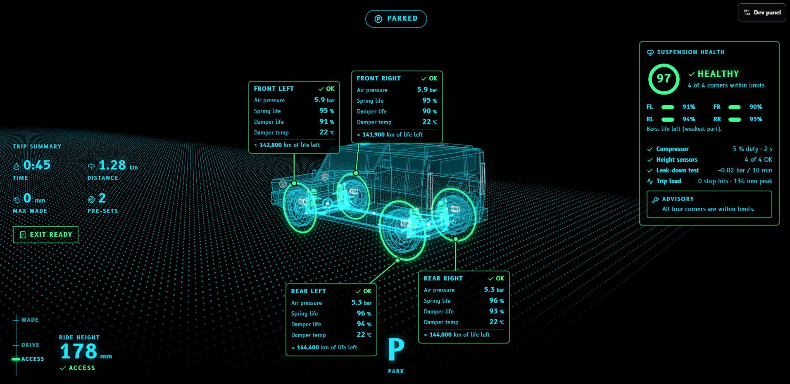

Suspension Diagnostics
Sensor based suspension diagnostic system on IVI
An IVI concept that shows drivers what the suspension senses on the terrain ahead, how it will respond, whether it has adjusted, and when the vehicle needs attention.
Journey
- 3
- Moments: before, during, after
- 3D
- Live vehicle visualization
- 1
- Glance to read it while driving
